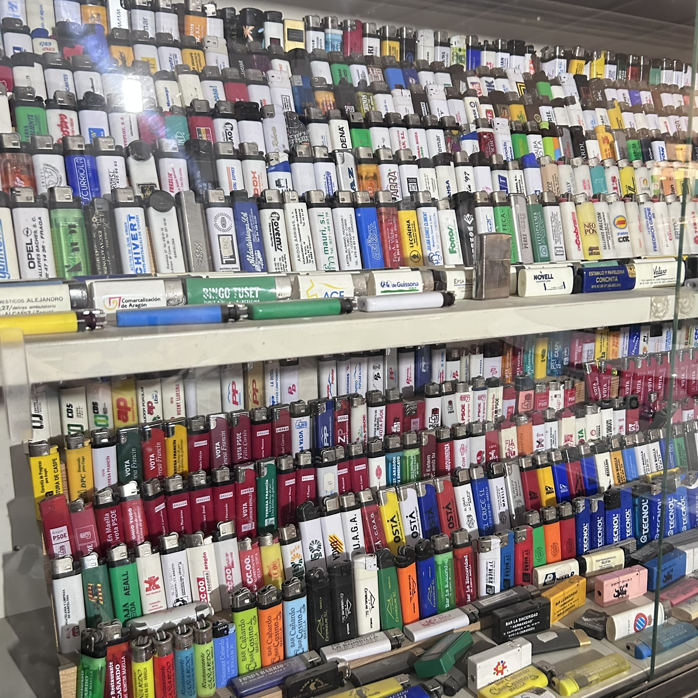

Su historia
La historia de José
Detrás de cada encendedor hay un instante de la vida de José: un viaje, una persona, un lugar al que ya no se puede volver salvo a través de un objeto guardado con cariño.
(pendiente de añadir)
El primer encendedor
Todo empezó con una pieza que llegó casi por casualidad: un encendedor que José guardó sin pensar que, con el tiempo, se convertiría en el origen de una de las colecciones más singulares que se conocen. Aquel primer gesto, casi sin importancia, marcó el comienzo de una afición que lo acompañaría durante el resto de su vida.
Aquella primera pieza sigue conservándose hoy, con un lugar propio entre las más de 25.000 que la han seguido.

Una afición que creció con los años
Lo que empezó como un gesto curioso se transformó poco a poco en costumbre, y la costumbre en pasión. Cada viaje, cada encuentro, cada bar o comercio se convirtió en una oportunidad para sumar una pieza nueva. Familiares y amigos empezaron también a guardarle encendedores, sabiendo que para José cada uno de ellos tenía un valor que iba mucho más allá de su uso cotidiano.
Así, año tras año, la colección fue creciendo de forma natural, casi sin que José se diera cuenta de la magnitud que estaba alcanzando.

25.000 piezas después
Hoy la colección de José supera las 25.000 piezas, un volumen que pocas personas pueden imaginar y que ha requerido años de dedicación, paciencia y una memoria privilegiada para recordar de dónde viene cada una de ellas.
No se trata solo de cantidad: detrás de cada fila de encendedores hay un orden, un criterio y, sobre todo, un recuerdo que José es capaz de relatar con todo lujo de detalles.

El valor de una vida coleccionando
Para José, esta colección no es solo un conjunto de objetos: es un mapa de su propia vida. Cada encendedor le recuerda a una persona, un lugar o un momento concreto, y juntos forman un relato personal construido pieza a pieza durante décadas.
"Cada encendedor tiene su historia, y yo me acuerdo de casi todas."
Esa memoria, esa paciencia y esa pasión sostenida en el tiempo son, quizás, la pieza más valiosa de toda la colección.
Descubre ahora cómo está organizada esta colección y qué tipos de encendedores la componen.
Ver la colección